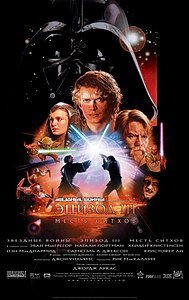
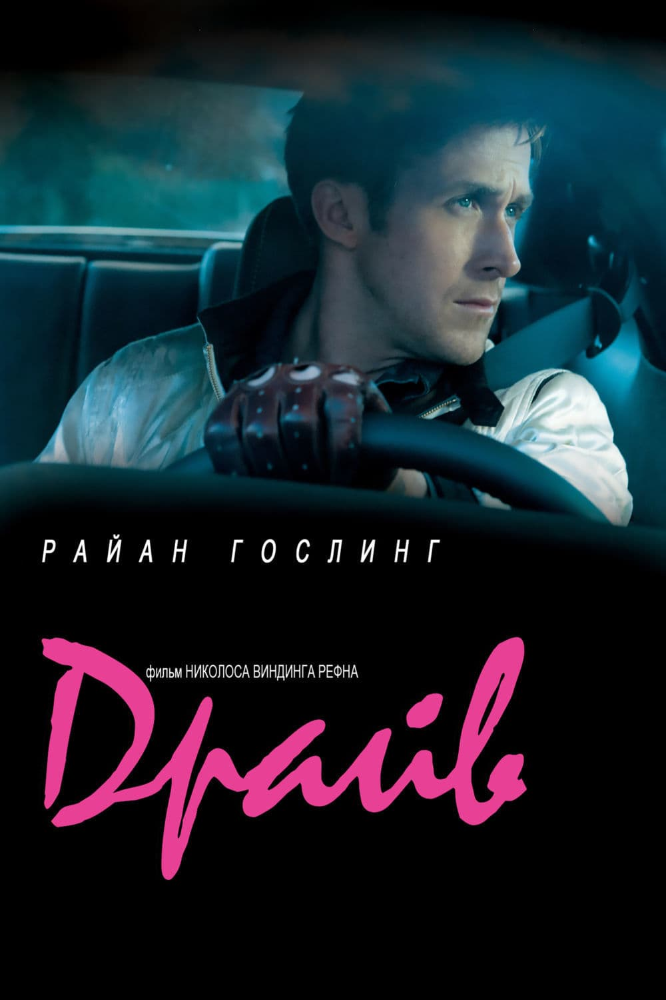

ТОП 10 - Звездные войны
По истине легендарная серия фильмов, по крайней мере первые
6 фильмов, вероятно первая серия фильмов с которой я познакомился
фильм я смотрел в лет 7-8 и тога я не задумывался о каком либо смысле. Пересматривал несколько раз всегда было интересно,
по моему мнению самые интересные эпизоды это 3,4
Из минусов это то, что Disney купили права на фильмы
и это превратилось в клоунаду про пидоров и негров.
Но все же первые 6 частей советую посмотреть если не смотрели
6 фильмов, вероятно первая серия фильмов с которой я познакомился
фильм я смотрел в лет 7-8 и тога я не задумывался о каком либо смысле. Пересматривал несколько раз всегда было интересно,
по моему мнению самые интересные эпизоды это 3,4
Из минусов это то, что Disney купили права на фильмы
и это превратилось в клоунаду про пидоров и негров.
Но все же первые 6 частей советую посмотреть если не смотрели
ТОП 9 - Джон Уик

Джон Уик тоже картина c которой я познакомился отностьиельно давно, фильм очевидно достоин просмотра, даже только из-за Киану Ривза. Идея мне очень понравилась, хотя я когда начинал смотреть первую часть я на одном моменте расплакался и скипнул, но с реализацией средненько. такое чуство, что у вех кто не гг 0 iq, но серия фильмов не плохая
ТОП 8 - Форсаж
Посмотрел этим летом и не пожалел, хотя с каждым фильмом это превращалось еще в более артхаусную дичь про гонки, фильмы особо не наделены смыслом, кроме того, что семья это главное. ну герои прикольные, не особо умные,но прикольные. Моя любимаячасть "Токийский дрифт", ну и герой офк Хан. К просмотру советую если вообще делать нечего
ТОП 7 - Зеленая книга
Пересмотрел Зеленая книга, еще раз понял что это почти шедевр кино. При просмотре мне пиишло в голову, что я это Тониболтун, а Яна Юрьевна этт негр. В фильме там негр образованный по кд ноет, что гг что то не так делает, прям как на русском. Короче фильм хороший со смыслом, посмотрите если хотите
ТОП 6 - Однажды в Голливуде
Посмотрел фильмец "Однажды в ... Голливуде", фильм определенно заслуживает просмотра. Мне понравились вес актеры подобранные на роли. До конца фильма не знал чем все закончится. Посмотрев 2 фильма Тарантино, концовка была ожидаемая, это наверное единственное, что не особо понравилось
ТОП 5 - Цельнометллическая оболочка
Цельнометаллическая оболочка Стэнли Кубрика в ГОБЛИНСКОЙ ОЗВУЧКЕ(это очень важно, озвучка мега решает), фильм не плохой, актеры подобраны на свои роли подобраны чуть ли не идеально, особенно Куча, хотя и офицер которого мы видим в фильме очень угарный из-за озвучки, сюжет фильма не дефолтный, до самого конца я не понимал чем кончится. Бтв фильм не для всех, конец сложный.
ТОП 4 - Место под соснами
Посмотрел "Место под соснами" 2012 с Райаном Гослингом. Это база, фильм хороший, мне понравилась как картина так и сюжет. Первый час просмотра вообще 11/10. Ну так вообще есть над чем задуматься
ТОП 3 - Амермканский психопат
Господа, жто база, это знать надо. После просмотра фильма и его переосмысления автоматически становишься сигмой. Ну а серьезно, хз что сказать, фильм крутой посмотрите, может что-то поймете, а еще Кристиан Бейл стиля раздал. Думаю, что скоро пересмотрю
ТОП 2 - Драйв
Вот это уже шедевр. Лучший актер(офк после Брэда Питта), почти лучший фильм по моему мнению, лучший сюжет в своем роде, вообщем-то БАЗА. Фильм сосмыслом, там проблем много рассматривается. Короче смотрите обязательно, после просмотра +50iq, после 100 респекта от меня
ТОП 1 - Бойцовский Клуб
По моему мнению один из лучших фильмов. Весь феномен фильма, как мне кажется, в том что пересматривая фильм каждый раз ты находишь другой смысл. Пересмотрев трижды я каждый раз воспринимал фильм по другому. Что касается актеров сьемки музыки и всего, что не касается сюжета, то это тоже все на высоте: актеры подобранные на свои роли справляются с ними отлично, музыка сопровождающая нас в конце фильма вообще мега вайб, вот еще понял, что освещение передает всю атмосферу фильма.